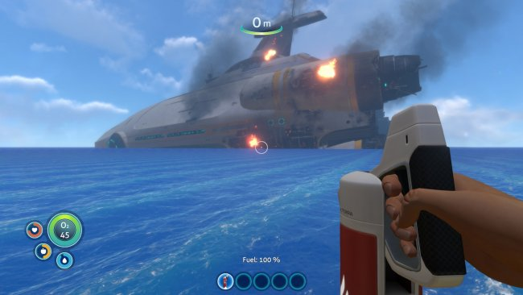
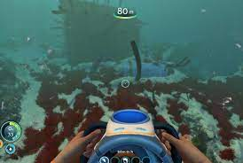
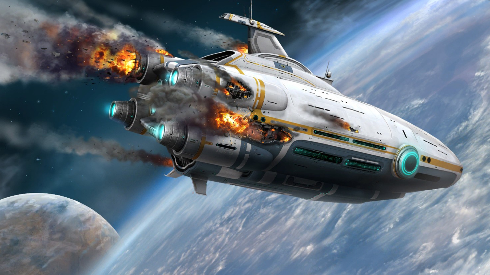
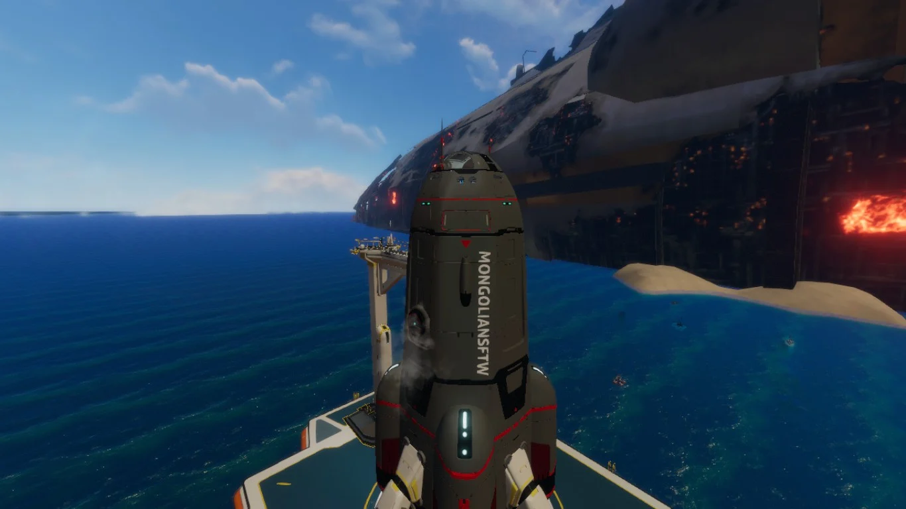
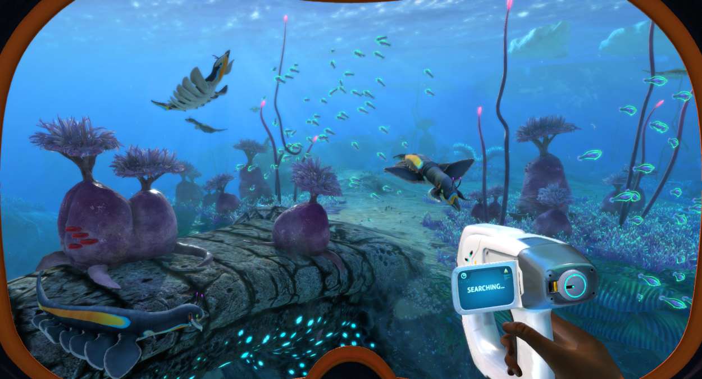
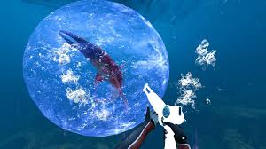

You are on a mission to colonize space. On the way, you are struck down by a mysterious energy pulse coming from planet 4546B. Your ship crashes, and it turns out you are the only person who survived the crash. You wake up to a loud noise and find out your life pod is on fire. You grab the fire extinguisher and extinguish it. You get out of your life pod and find yourself on a planet that is mostly water. The first thing you want to do is find some resources in order to survive. Here is a guide on how to survive the world of Subnautica.
Single-player mode: Experience the game on your own, facing the challenges and mysteries of the underwater world.
The story of Subnautica: Uncover the secrets behind planet 4546B and your mission as the sole survivor.
Gameplay of the game and how to survive: Learn the mechanics, crafting, exploration, and strategies to thrive in the depths.
Vehicles, where to get blueprints, and how to craft them: Discover and construct various underwater vehicles to aid your exploration.

How to Start
Embark on your adventure in Subnautica by learning the essential steps to get started:
Understand the game mechanics and controls: Familiarize yourself with the controls, movement, and interactions in Subnautica to navigate the underwater world effectively.
Explore your surroundings and gather basic resources: Begin by exploring the immediate area around your life pod, collecting essential resources like food, water, and materials for crafting.
Craft essential tools and equipment: Utilize the resources you gather to craft basic survival tools, such as a knife, scanner, and habitat builder.
Learn how to navigate underwater and manage your oxygen supply: Master the art of swimming, diving, and surfacing to optimize your exploration while keeping an eye on your oxygen levels.

Story
Immerse yourself in the captivating story of Subnautica and uncover the mysteries of planet 4546B:
Discover the remnants of previous civilizations: Encounter remnants of advanced civilizations, their structures, and technology, offering clues to the planet's history.
Encounter strange creatures and underwater ecosystems: Dive into vibrant and diverse ecosystems teeming with unique and sometimes hostile aquatic life forms.
Unravel the secrets of the energy pulse that brought you to this planet: Investigate the cause of the energy pulse that disabled your ship and discover the mysteries it holds.
Find clues and pieces of the puzzle to progress in the story: Piece together the fragments of information you gather through exploration and unravel the truth behind your mission and the planet's enigmatic past.

Goals
Set your goals and strive to survive and thrive in the challenging underwater world of Subnautica:
Build a base to establish a safe haven: Create a secure underwater base to serve as your primary shelter, storage facility, and hub for crafting and researching.
Explore different biomes and depths to uncover rare resources: Dive deeper into the ocean, exploring various biomes to gather valuable resources for crafting advanced tools, equipment, and upgrades.
Construct advanced vehicles for enhanced underwater mobility: Acquire the necessary blueprints and resources to build vehicles like the Seamoth and Cyclops, enabling faster and safer underwater travel.
Discover and research new technologies to aid in your survival: Unlock and utilize advanced technologies, such as upgrades for your tools and vehicles, to overcome challenges and expand your capabilities.

Guide
What to Do
Engage with the Subnautica community and explore additional activities and content:
Join online forums and communities to connect with other players: Share your experiences, seek advice, and discuss the game with a passionate community of Subnautica players.
Share your experiences and discoveries with the community: Showcase your achievements, screenshots, and videos, and contribute to the collective knowledge of the game.
Participate in in-game events and challenges: Take part in special events and challenges organized by the developers to test your skills and unlock unique rewards.
Experiment with mods and user-created content to enhance your gameplay: Explore the wide range of mods and user-created content available to add new features, improve visuals, or introduce unique gameplay elements to your Subnautica experience.

Tips and Strategies
Master the game with these helpful tips and strategies to overcome challenges in Subnautica:
Manage your resources efficiently to ensure long-term survival: Prioritize and balance your consumption of food, water, and oxygen, and gather renewable resources to sustain yourself in the long run.
Scan and study different creatures and plants to understand their behaviors: Use your scanner to analyze and learn about the various flora and fauna you encounter, helping you identify their behaviors, vulnerabilities, and potential uses.
Upgrade your equipment and tools to gain an advantage: Seek out and acquire upgrades for your tools and equipment to improve their efficiency, durability, and functionality, allowing you to tackle more challenging tasks.
Learn the locations of important landmarks and resources: Create mental maps of significant landmarks, resource-rich areas, and potential hazards to navigate the underwater world more effectively.

Exploration
Embark on thrilling underwater expeditions and explore the vast and diverse world of Subnautica:
Dive into deep trenches and discover hidden caves: Venture into the depths of the ocean, navigating treacherous trenches and exploring dark caves to uncover hidden wonders and secrets.
Encounter unique and majestic creatures in their natural habitats: Observe and interact with the diverse array of marine life that inhabit the various biomes, from small, bioluminescent organisms to massive, awe-inspiring creatures.
Investigate wrecks and abandoned structures for valuable loot: Explore the remnants of crashed spacecraft, sunken ships, and abandoned bases to scavenge resources, technology fragments, and valuable artifacts.
Unlock new areas and biomes by solving puzzles and overcoming obstacles: Overcome challenging puzzles, environmental hazards, and even hostile creatures to gain access to new areas and uncover the secrets they hold.